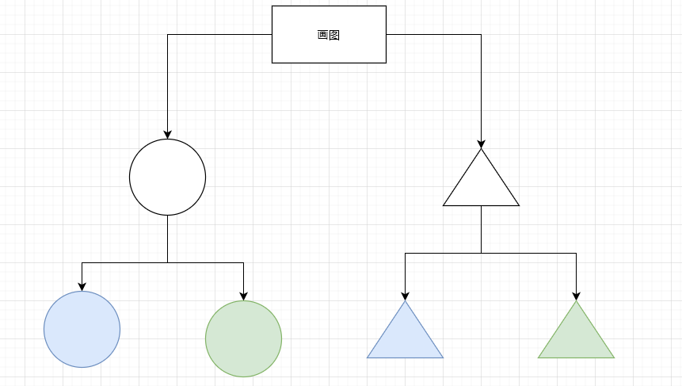
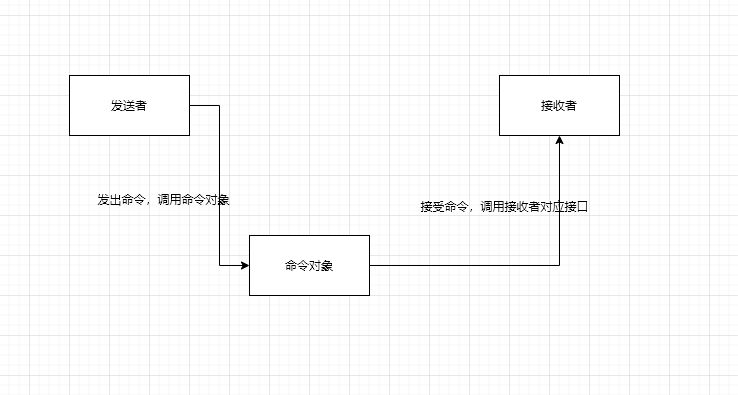
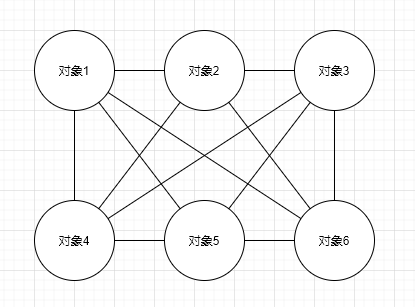

原型模式 创建对象开销比较大时，我们通过clone一个存在的对象来创建新对象
1 2 3 4 5 6 7 8 9 10 11 12 13 14 15 16 17 18 19 20 21 22 23 let prototype = { getName:function ( return this .first + "" + this .last; }, say:function ( alert("hello" ) } } let x = Object .create(prototype); x.first = "A" ; x.last = "B" ; console .log(x.getName());x.say(); let y = Object .create(prototype);y.first = "C" ; y.last = "D" ; console .log(y.getName());y.say();
桥接模式 在我们画图形，图形和颜色会有好多种组合，如果每个组合都创建一个对象会有好多类，这时候我们可以把图形和颜色抽离出来，变成两个类

1 2 3 4 5 6 7 8 9 10 11 12 13 14 15 16 17 18 19 20 21 22 23 24 25 class Color constructor (name){ this .name = name; } } class Shape constructor (name,color){ this .name = name; this .color = color; } draw(){ console .log(`${this .color.name} ${this .name} ` ) } } let red = new Color("red" );let yellow = new Color("yellow" );let circle = new Shape("circle" ,red);circle.draw(); let triangle = new Shape("triangle" ,yellow);triangle.draw();
组合模式 组合模式 （Composite Pattern）又叫整体-部分模式，它允许你将对象组合成树形结构来表现整体-部分层次结构，让使用者可以以一致的方式处理组合对象以及部分对象。
1 2 3 4 5 6 7 8 9 10 11 12 13 14 15 16 17 18 19 20 var tree= { tag:"div" , attr:{ id:"div1" , className:"container" }, children:[ { tar:"p" , attr:{}, children:["123" ] }, { tar:"p" , attr:{}, children:["456" ] }, ] }
示例 在本地一个「电影」文件夹下有两个子文件夹「漫威英雄电影」和「DC英雄电影」，
1 2 3 4 5 6 7 8 9 10 11 12 13 14 15 16 17 18 19 20 21 22 23 24 25 26 27 28 29 30 31 32 33 34 35 36 37 38 39 40 41 42 43 44 45 46 47 48 49 50 51 52 53 54 55 56 57 58 59 60 61 62 63 64 65 66 67 68 var createFolder = function (name ) return { name: name, _children: [], add(fileOrFolder) { this ._children.push(fileOrFolder) }, scan(cb) { this ._children.forEach(function (child ) child.scan(cb) }) } } } var createFile = function (name, size ) return { name: name, size: size, add() { throw new Error ('文件下面不能再添加文件' ) }, scan(cb) { cb(this ) } } } var foldMovies = createFolder('电影' )var foldMarvelMovies = createFolder('漫威英雄电影' )foldMovies.add(foldMarvelMovies) var foldDCMovies = createFolder('DC英雄电影' )foldMovies.add(foldDCMovies) foldMarvelMovies.add(createFile('钢铁侠.mp4' , 1.9 )) foldMarvelMovies.add(createFile('蜘蛛侠.mp4' , 2.1 )) foldMarvelMovies.add(createFile('金刚狼.mp4' , 2.3 )) foldMarvelMovies.add(createFile('黑寡妇.mp4' , 1.9 )) foldMarvelMovies.add(createFile('美国队长.mp4' , 1.4 )) foldDCMovies.add(createFile('蝙蝠侠.mp4' , 2.4 )) foldDCMovies.add(createFile('超人.mp4' , 1.6 )) console .log('size 大于2G的文件有：' )foldMovies.scan(function (item ) if (item.size > 2 ) { console .log('name:' + item.name + ' size:' + item.size + 'GB' ) } })
享元模式 给无限下拉列表绑定事件时，如果每一个标签都绑定事件则开销非常大，我们可以把绑定事件放到父级标签上
1 2 3 4 5 6 7 8 9 10 11 12 13 14 15 16 17 18 19 20 21 22 23 24 25 26 27 28 <!DOCTYPE html > <html lang ="en" > <head > <meta charset ="UTF-8" > <title > Title</title > </head > <body > <div id ="div1" > <a href ="#" name ="A" > a1</a > <a href ="#" > a1</a > <a href ="#" > a1</a > <a href ="#" > a1</a > </div > </body > <script > var div1 = document .getElementById("div1" ); div1.addEventListener("click" ,function (e) var target = e.target; console .log(target.name); if (target.name === 'A' ){ alert(target.innerHTML) } }) </script > </html >
策略模式 超市购买物品时，会员，VIP以及普通用户购买物品价格不同，如果用if…else，如果再添加其他策略则又要增加if…else
1 2 3 4 5 6 7 8 9 10 11 12 13 14 15 16 17 18 19 20 21 22 23 class User constructor (type){ this .type = type; } buy(){ if (this .type === "ordinary" ){ console .log("普通用户购买" ) }else if (this .type === "member" ){ console .log("会员购买" ) }else if (this .type === "vip" ){ console .log("VIP用户购买" ) } } } var u1 = new User("ordinary" );u1.buy(); var u2 = new User("member" );u2.buy(); var u3 = new User("vip" );u3.buy();
1 2 3 4 5 6 7 8 9 10 11 12 13 14 15 16 17 18 19 20 21 class OrdinaryUser buy(){ console .log("普通用户购买" ) } } class MemberUser buy(){ console .log("会员用户购买" ) } } class VipUser buy(){ console .log("vip用户购买" ) } } var u1 = new OrdinaryUser();u1.buy(); var u2 = new MemberUser();u2.buy(); var u3 = new VipUser();u3.buy();
责任链模式
一步操作可能分为多个职责角色来完成
把这些角色都分开，然后用一个链串起来
将发起者和各个处理者进行隔离
1 2 3 4 5 6 7 8 9 10 11 12 13 14 15 16 17 18 19 20 21 22 23 24 25 26 class Action constructor (name){ this .name = name; this .nextAction = null ; } setNextAction(action){ this .nextAction = action; } handle(){ console .log(`${this .name} 审批` ); if (this .nextAction != null ){ this .nextAction.handle(); } } } let a1 = new Action("组长" );let a2 = new Action("经理" );let a3 = new Action("总监" );a1.setNextAction(a2); a2.setNextAction(a3); a1.handle();
职责链模式可能在真实的业务代码中见的不多，但是作用域链、原型链、DOM 事件流的事件冒泡，都有职责链模式的影子:
作用域链： 查找变量时，先从当前上下文的变量对象中查找，如果没有找到，就会从父级执行上下文的变量对象中查找，一直找到全局上下文的变量对象。
原型链： 当读取实例的属性时，如果找不到，就会查找当前对象关联的原型中的属性，如果还查不到，就去找原型的原型，一直找到最顶层为止。
事件冒泡： 事件在 DOM 元素上触发后，会从最内层的元素开始发生，一直向外层元素传播，直到全局 document 对象。
命令模式 命令模式 （Command Pattern）又称事务模式，将请求封装成对象，将命令的发送者和接受者解耦。本质上是对方法调用的封装

执行命令时，发布者和执行者分开
中间加入命令对象，作为中转站
将发起者和各个处理者进行隔离
将军发布命令，将军会把命令传递给小号手进行传递，小号手把命令传递给士兵，士兵再去执行将军的命令
1 2 3 4 5 6 7 8 9 10 11 12 13 14 15 16 17 18 19 20 21 22 23 24 25 26 27 28 29 30 31 32 33 34 35 36 37 38 class Receiver exec(){ console .log("执行" ); } } class Command constructor (receiver){ this .receiver = receiver; } cmd(){ console .log("触发命令" ); this .receiver.exec(); } } class Invoker constructor (command){ this .command = command } invoke(){ console .log("开始" ) this .command.cmd(); } } let soldier = new Receiver();let trumpeter = new Command(soldier);let general = new Invoker(trumpeter);general.invoke();
备忘录模式
随时记录一个对象的状态变化
随时可以回复之前的某个状态（比如撤销功能）
1 2 3 4 5 6 7 8 9 10 11 12 13 14 15 16 17 18 19 20 21 22 23 24 25 26 27 28 29 30 31 32 33 34 35 36 37 38 39 40 41 42 43 44 45 46 47 48 49 50 51 52 53 54 55 56 57 58 59 60 61 62 63 64 65 class Memento constructor (content){ this .content = content } getContent(){ return this .content } } class CareTaker constructor (){ this .list = []; } add(memento){ this .list.push(memento) } get (index){ return this .list[index]; } } class Editor constructor (){ this .content = null ; } setContent(content){ this .content = content; } getContent(){ return this .content } saveContentToMemento(){ return new Memento(this .content) } getContentFromMemento(memento){ this .content = memento.getContent(); } } let editor = new Editor();let careTaker = new CareTaker();editor.setContent("111" ); editor.setContent("222" ); careTaker.add(editor.saveContentToMemento()) editor.setContent("333" ); careTaker.add(editor.saveContentToMemento()) editor.setContent("444" ); console .log(editor.getContent());editor.getContentFromMemento(careTaker.get(1 )) console .log(editor.getContent());editor.getContentFromMemento(careTaker.get(0 )) console .log(editor.getContent());
中介者模式 
房客和房东并不会当面交易，而是通过中介来进行交易。房东拿到的房租也是中介的报价，房客的房租也是中介的报价，二者不会直接接触
1 2 3 4 5 6 7 8 9 10 11 12 13 14 15 16 17 18 19 20 21 22 23 24 25 26 27 28 29 30 31 32 33 34 35 36 37 38 39 40 41 42 43 44 45 46 47 48 class Mediator constructor (a,b){ this .a = a; this .b = b; } setA(){ let number = this .b.number; this .a.setNumber(number * 100 ); } setB(){ let number = this .a.number; this .b.setNumber(number / 100 ); } } class A constructor (){ this .number = 0 ; } setNumber(num,m){ this .number = num; if (m){ m.setB(); } } } class B constructor (){ this .number = 0 ; } setNumber(num,m){ this .number = num; if (m){ m.setA(); } } } let a = new A();let b = new B();let m = new Mediator(a,b);a.setNumber(100 ,m); console .log(a.number,b.number);b.setNumber(100 ,m); console .log(a.number,b.number);